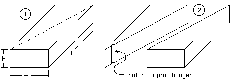
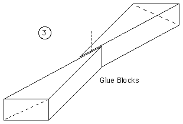
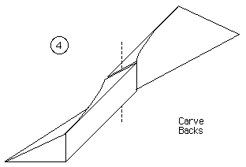
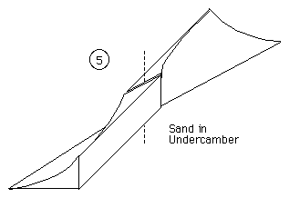
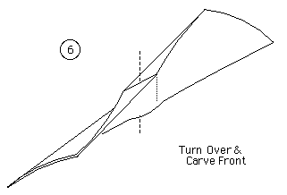
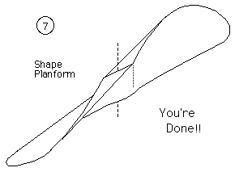
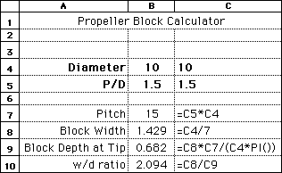

| - dannysoar |
By David Dodge
(a.k.a. dannysoar)
IntroCarving props is one of the very nice things about flying rubber models. It is a truly mellow occupation. God, the department of mental health and the blood pressure police will give you points. You can do it while visiting with your friends - like knitting. If you stick with the program it is a lot easier than it seems and they all will be impressed.With a little practice, and the confidence that comes from it, the actual carving part from the block to fine finish sanding can be done in twenty to thirty minutes. Trust me you can do it. The very worst that can happen is that the rain forests will have given up an ounce of balsa in vain. Props are a complex science and one can spend much time and thought studying them. Fortunately you don't have to know all this arcana to make a decent prop. I will do the very basics at the end of the note.
Advantages of Balsa Props
Some Tips
The BlankThe big trick is to lay out a prop blank first. This is a piece of balsa that has the geometry made physical so you don't have to think and cut at the same time. You carve to the edges of the block and the prop appears.You can order ready made blanks from Aerodyne, or make them yourself. What follows is one way to make a blank. This makes a "Bilgri" prop. The other kind of blank, (hourglass) defies my ability to describe without pictures. Frequently the plans will show a prop blank.
Lets Get Started!
Step #1: Get yourself a piece of nice even balsa with the following dimensions.
This block will result in a prop with a fairly high pitch to diameter ratio (P/D) of 1.8. While fine for some things, folks might wish to start with a lower P/D if they are having trouble getting a plane to fly well. Starting with the width being 2.6 times the height will give you a P/D of about 1.2. This lower pitch should be easier to trim, at the expense of some duration. (sample spreadsheet for other P/D's below)  |
| The width need only be about right and can be altered to suit the available wood sizes, but the height should then be carefully measured to maintain the desired P/D. Lay this piece down flat and draw a diagonal on the top. Cut the piece in half along the line.
Step #3: Now if you take the two triangular pieces and lay them tip to tip, you will see the beginnings of your prop. Overlap the triangles at the tips and glue them together. That's what the 1/2" was about. Drill a nice straight hole thru the center. This is for the prop shaft. The tricky way to do this is to lightly pre-notch the blanks as shown above. On EACH tip, draw a diagonal line going up and to the right. There it is - A prop blank. |
 |
|  | Carving the Blank
Step #4: Here is where the fun really begins as you carve the bottom or back of your prop. We will be working upside down, to match the drawing, and prevent cutting off a thumb. Take the carving blade and cut away everything above the edges marked by the "up and to the right" line you just drew. The carved surface should be straight between the leading and trailing edges. Lay the straight edge of the carving blade across the face and check from time to time. |
|
Step #5: Sand in a little curve, or undercamber, after you have it flat. If you wrap a piece of sandpaper around a drinking glass this is pretty easy. Do the same thing on the other blade. Don't forget to start from the "up and to the right" diagonal for the second blade. |
 |
|  | Step 6: Now flip the prop over to do the tops in an airfoil shape. Rough it out with the knife and finish with sandpaper. From time to time hold the blade up to a light to check that the thickness is even. Careful here or you will break it. But if you do, no matter, glue it back with Ambroid and take a walk while it dries. You can use Cya but if you use too much you will get a lump where you sand the glue joint. When this happened to me, the prop worked fine but looked grotty. The other thing that can go wrong here is that you get a spot that is too thin. Just cut the thin spot out, glue in a piece of sheet and sand. Cya is the way to go here. |
Finishing upStep #7: You are really getting close now. Sand in a little radius at the corners on the tip of each blade. There you have it!! A prop! This planform is called a Langley prop, and I kind of like the old timey look. You can mount and fly it as it is. But if you want, you can cut away any planform that tickles your endorphin flow. I draw the shape I want on one blade and cut away the extra. Then I use the scrap to mark the other blade. |
 |
The Very Basic Brainy StuffHere's the basic brainy stuff. A prop has 2 numbers; the diameter and the pitch. The diameter is what you think it is. The pitch is a measure of the "twist". It is the distance it would screw itself forward if it was working in butter and had no slip. If you look at a prop from the end you will see that it is an airfoil at an angle. Imagine that as it turns it advances along this angle. The tip will travel around the circumference of a circle
Circumference = pi x the diameter.
Pitch = pi x diameter x slope
For beginners the pitch should be constant and if you use the block I suggested it will be close enough. Pitches of a little more than 1 are about right. You can work out the pitch of the block I gave you "As an exercise for the student" I just stole it off a Burnham twin pusher plan.
The HoleHere is a sneaky way to make the hole, in case you didn't read the directions carefully or look at the pictures. Before you glue the two pieces together, take a little right angle and draw a line in each tip where the hole is going to go. Cut a little groove here. Now glue the pieces together.
AddendumThe Aerodyne blocks I have seen will produce a very low pitch prop. You might want to order one with an oversize diameter and cut the tips off.dannysoar
 Jim Anderson has provided an prop blank drawing and spreadsheet for working with the different, and perhaps more traditional, hourglass shaped prop block. return to Tips Index or view a Thayer's first balsa prop
Copyright 1998-2015, Thayer Syme. All rights reserved |